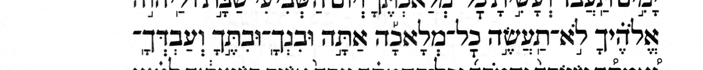
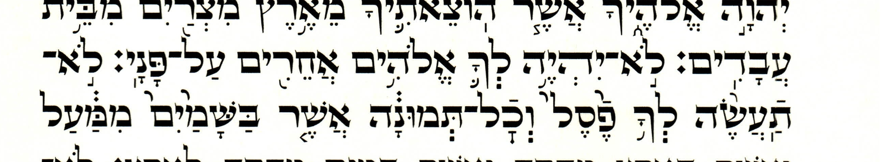

In the prose system a chanted word always has at least one accent, and usually only one. In a small minority of cases, a chanted word has two accents, but never more than two. Some of the two-accent words are simple and some are compounds. Among the two-accent compounds, some spread those two accents across two atoms, e.g.:
| ומ֨ן־אח֔יו | 1 Chr. 15:17 |
| מ֨ן־כל־הילד֔ים | Dan. 1:15 |
| אשר־ב֥אה־אליה֖ם | 2 Chr. 8:11 |
(One of the two is always on the last atom.) The remaining two-accent compounds instead concentrate both of those two accents on the last atom, e.g. (Gen. 2:7):
מן־ה֣אדמ֔ה
Of the 36,786 maqaf compounds in the prose verses of MAM, 233 (0.63%) are “spreaders” and 462 (1.26%) are “concentrators.” Here we are primarily interested in “spreaders”, i.e. two-accent maqaf compounds where one of those accents is on a non-final atom. This page studies MAM's spreaders to see if they shed any light on some strange spreaders in the Decalogues of two editions:
| Edition | Koren | Simanim Tiqqun | Simanim Tiqqun |
|---|---|---|---|
| Decalogue | Deut. | Exodus | Exodus |
| Strand | עליון | תחתון | תחתון |
| Strange | ל֣א־תעש֣ה | ל֣א־יהי֥ה לך֛ | ל֣א־תעש֨ה לך֥ |
| Reference | ל֣א תעש֣ה | לא־יהי֥ה לך֛ | לא־תעש֨ה לך֥ |
| Diff. fr. Ref. | +maqaf | +munaḥ | +munaḥ |
| Other strand | לא־תעש֨ה | ל֣א יהיה־לך֩ | ל֣א תעשה־לך֣ |
(Every strand named on this page is a p-trad one.) (Both Koren and the Tiqqun have strange spreaders on לא־תעשה, so there are only two distinct compounds among these three cases: לא־תעשה and לא־יהיה.)
Each strange spreader differs from the Wikisource reference by the addition of a mark (either maqaf or munaḥ) that might have been accidentally carried over from the other strand.
But if we take the three as they stand, is there anything in Tanakh like any of them?
There is not. None of the three pairs occurs on any chanted word of MAM's prose verses, compound or simple: not Koren's munaḥ–munaḥ, and not the Simanim Tiqqun's munaḥ–merkha or munaḥ–qadma.
The table below shows the accent pairs that occur on a spreader, in the prose verses of MAM, and how often each of them occurs:
| Acc1 | Acc2 | Spr | Spr-Example | Cnc | Sim | Sim-Example |
|---|---|---|---|---|---|---|
| munaḥ | zaqef | 1 | נ֣בל־צ֔יץ | 414 | 958 | ולמ֣ועד֔ים |
| metigah | zaqef | 211 | מ֨ן־כל־הילד֔ים | 0 | 199 | לז֨רעך֔ |
| merkha | tipeḥa | 4 | אשר־ב֥אה־אליה֖ם | 4 | 4 | מבל֥יגית֖י |
| merkha | silluq | 4 | ש֥לף־חֽרב | 0 | 1 | שלה֥בתיֽה |
| merkha | pashta | 1 | ו֥אתן־נ֙זם֙ | 0 | 0 | |
| mayela | etnaḥta | 8 | וישב֖ו־ב֑ה | 0 | 3 | בשבע֖תיכ֑ם |
| mayela | silluq | 1 | וקו֖יתי־לֽו | 0 | 4 | לה֖חלֽו |
| mahapakh | pashta | 3 | ועש֤תי־לך֙ | 2 | 3 | ש֤אהבה֙ |
| Total | 233 | 420 | 1172 |
Most of these pairs are covered in Yeivin's ITM §§210, 216, 221, 224, 233 and 241, and in Breuer's CoS ch. 3 §§20, 28, 30, 38 and 40 and ch. 5 §§4–6.
The 5 spreaders that have a merkha before a pashta, or a merkha before a silluq, are covered in Yeivin's ITM §357 and Breuer's CoS ch. 1 §43, because they are quite a different phenomenon from the other spreaders.
My “features of interest” lists include all cases of accent pairs starting with merkha and starting with mahapakh.
No spreader has any of these pairs. All ten of them occur in MAM's prose verses on simple chanted words, and six of them on concentrators as well.
| Acc1 | Acc2 | Cnc | Sim | Sim-Example |
|---|---|---|---|---|
| munaḥ | revia | 1 | 4 | א֣נ֗א |
| munaḥ | etnaḥta | 0 | 2 | יד֣ידי֑ה |
| munaḥ | mahapakh | 0 | 1 | ש֣ה֤ם |
| munaḥ | pazer | 0 | 1 | א֣נ֡א |
| qadma | ger./az. | 27 | 99 | אל֨היכ֜ם |
| qadma | darga | 1 | 5 | ואד֨ני֧הו |
| qadma | mahapakh | 2 | 4 | ובא֨חיכ֤ם |
| qadma | merkha | 3 | 3 | המאכ֨לך֥ |
| merkha | tevir | 8 | 61 | ג֥בר֛ו |
| merkha | munaḥ | 0 | 1 | ושר֥בי֣ה |
| Total | 42 | 181 |
One row is written ger./az. because its second accent goes by two names: in some traditions a geresh on a chanted word stressed on its last syllable is called an azla (Jacobson, CHB p. 187). Which name each of the 99 takes turns on that stress, which this table does not record.
The simple counts on this page leave out six chanted words that have two accents on the same letter, because both accents likely belong to the same syllable. They are listed in an appendix below.
These six chanted words are in none of the tables above. Each has two accents on one letter, so both accents likely belong to the same syllable. My “features of interest” lists include the five with a telisha gedolah among them.
| Acc1 | Acc2 | Type | Word | Mwd |
|---|---|---|---|---|
| gershayim | TG | gerstar-tg | ז֞֠ה | Mwd |
| gershayim | TG | gerstar-tg | ק֞֠רב֞֠ו | Mwd |
| geresh | TG | gerstar-tg | ש֜֠בו | Mwd |
| geresh | TG | gerstar-tg | ו֜֠לא֜֠לה | Mwd |
| gershayim | TG | gerstar-tg | ז֞֠את | Mwd |
| mahapakh | qadma | ? | נטמא֤֨ים | Mwd |
In the table above, all words are shown as they appear in MAM. In particular, two of them have each of their two accents written twice, so they look at first like they have four accents rather than two. But, MAM intends the later pair of accents to be interpreted as a stress helper. This presentation is, as far as I know, unique to MAM. The Mwd column links each chanted word to MAM's notes on it. For the words with stress helpers, MAM's notes discuss the wide variety of ways these words appear in important manuscripts and printed editions.


The poetic system is a different matter, and different enough that the same count would not mean the same thing there. It puts two marks on one chanted word readily and systematically (Breuer, CoS ch. 9 §§20–26), where the prose system does so rarely, and in the few pairs above. And many of its maqafs are not written at all: Breuer (§§27, 37) records that in poetic verses the maqaf after a secondary mark is customarily left unwritten while the atom still counts as joined, so a survey that looks for a written maqaf reaches only part of what is there. MAM supplies the rest: it has 116 gray maqafs, its mark for a maqaf the manuscript leaves unwritten where the chanted word needs one, and this survey reads a gray maqaf as a maqaf. On that reckoning MAM's poetic verses have 130 cases. Of the gray maqafs, 69 join an atom that has an accent alongside the compound's accent; the other 47 have one accent written across the two atoms. No figure here belongs beside a prose one.